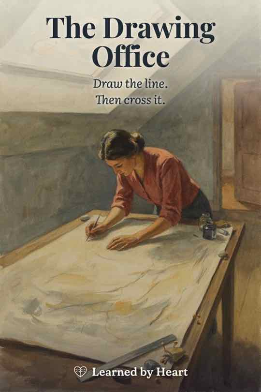
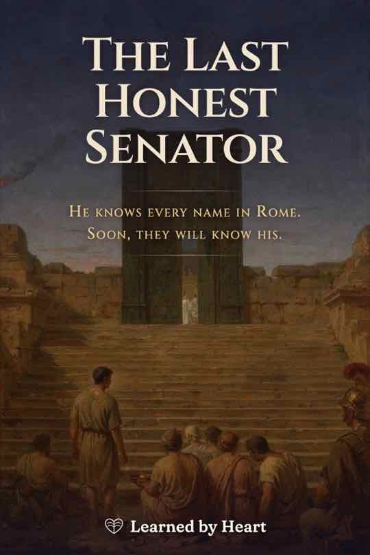
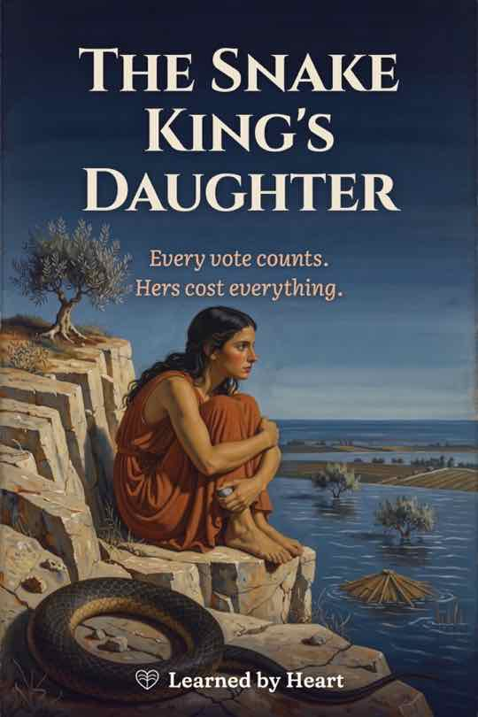

Learned by Heart › Library › Novels that teach history
Novels that teach history
Historical novels in the styles readers love, each one teaching a real slice of the past: how people lived, worked, traded and fought, seen from the inside. Subjects here: the Cold War, start to finish, the Second World War, start to finish, the Tudors, the Viking age, the ancient Greek world, the fall of the Roman Republic. Chapter one of every book is free.
 Six Queens' Worth of ThreadA Tudor court drama for readers of Philippa Gregoryteaches the TudorsEvery life hangs by a thread.
Six Queens' Worth of ThreadA Tudor court drama for readers of Philippa Gregoryteaches the TudorsEvery life hangs by a thread. The Cold War in Aunt Rita's KitchenA family saga for readers of Kristin Hannahteaches the Cold War, start to finishThe war went cold. But the kitchen stayed warm.
The Cold War in Aunt Rita's KitchenA family saga for readers of Kristin Hannahteaches the Cold War, start to finishThe war went cold. But the kitchen stayed warm.
The Drawing OfficeA wartime novel for readers of Kate Quinnteaches the Second World War, start to finishDraw the line. Then cross it.
The Last Honest SenatorA Roman political thriller for readers of Robert Harristeaches the fall of the Roman RepublicHe knows every name in Rome. Soon, they will know his.
The Snake King's DaughterA Greek myth retelling for readers of Madeline Miller and Jennifer Saintteaches the ancient Greek worldEvery vote counts. Hers cost everything. HacksilverA Viking saga for readers of Bernard Cornwellteaches the Viking ageEvery man was worth his weight in silver.
HacksilverA Viking saga for readers of Bernard Cornwellteaches the Viking ageEvery man was worth his weight in silver.
Want one written just for you?
Tell us what you love reading and what you've always meant to understand, and we'll write a novel for you, or for someone you love. Chapter one arrives within 24 hours.
Start your story